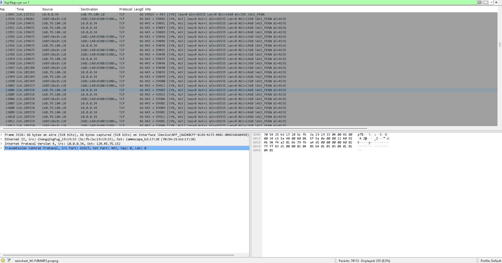
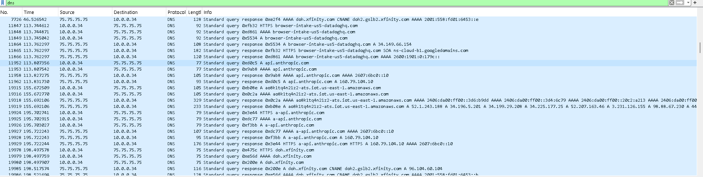
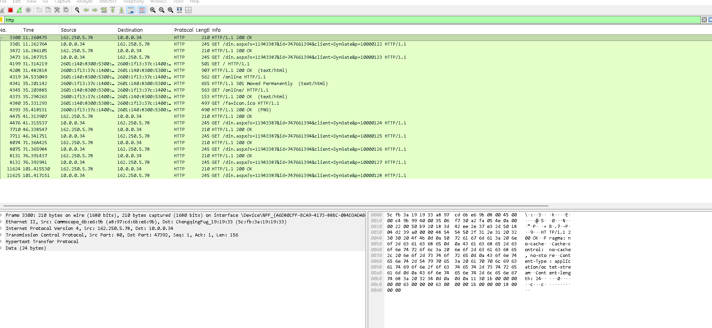
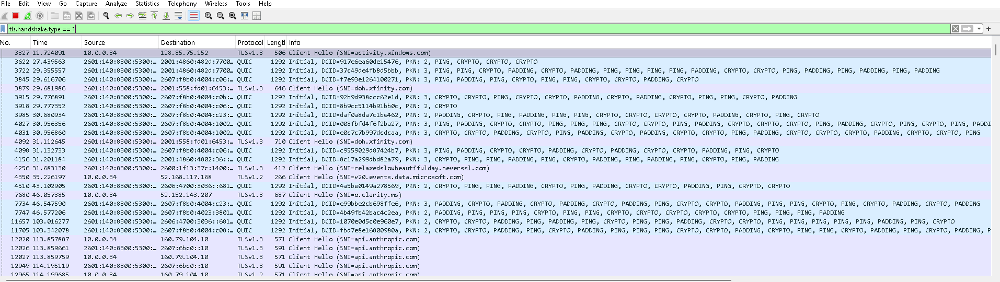
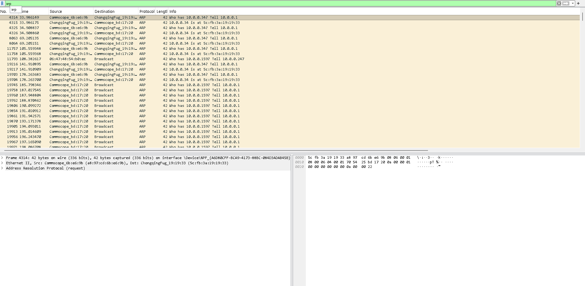

Wireshark Network Traffic Analysis Lab
Hands-on packet analysis across the protocols and patterns a SOC analyst sees daily — how normal traffic looks, how to filter for what matters, and how to spot suspicious activity at the network layer.
Filters cheat sheet (built during this lab)
| Goal | Filter |
|---|---|
| Only HTTP traffic | http |
| Only DNS | dns |
| TCP SYN packets (connection starts / scans) | tcp.flags.syn == 1 && tcp.flags.ack == 0 |
| Traffic to/from one host | ip.addr == 192.168.56.20 |
| TLS handshakes | tls.handshake |
| TLS Client Hello (shows SNI / destination) | tls.handshake.type == 1 |
| ARP only | arp |
| HTTP POST (often logins / form data) | http.request.method == "POST" |
| DNS responses with no such name | dns.flags.rcode == 3 |
Scenario 1 — TCP three-way handshake
The foundation of every TCP connection: SYN → SYN/ACK → ACK. Filter: tcp.flags.syn == 1. In this capture, host 10.0.0.34 opens a connection to 160.79.104.10 — the same address api.anthropic.com resolved to in the DNS capture. Servers respond with [SYN, ACK] on port 443 (HTTPS).
Defender note: a flood of [SYN] packets with no matching [SYN, ACK] or final [ACK] is the signature of a SYN scan or SYN flood.

tcp.flags.syn == 1: SYN packets (client opening connections) and SYN/ACK responses (servers agreeing) — legs 1 and 2 of the three-way handshake, all to port 443.
Scenario 2 — DNS query & response
Each lookup is a query / response pair sharing the same transaction ID. Host 10.0.0.34 sends an A-record query (transaction 0xd0c5) for api.anthropic.com to the resolver 75.75.75.75; the matching response returns 160.79.104.10.
Defender note: DNS is the most abused protocol for covert channels — abnormally long/random subdomains (DNS tunneling) and high-frequency lookups to one domain on a fixed interval (C2 beaconing) stand out against normal resolution traffic.

0xd0c5 for api.anthropic.com; matching response resolves it to 160.79.104.10. Transaction IDs pair each query with its response.
Scenario 3 — HTTP request analysis
Filter: http. HTTP is cleartext, so the request line (GET / HTTP/1.1) and the server's 200 OK response are fully visible in the packet list. An analyst can read everything — which is exactly why credentials sent over plain HTTP are a finding.

GET / HTTP/1.1 and its HTTP/1.1 200 OK (text/html) response, with the Hypertext Transfer Protocol layer expanded.
Scenario 4 — TLS handshake (what's visible when encrypted)
Filter: tls.handshake.type == 1 (Client Hello). Even though the rest of the session is encrypted, the Server Name Indication (SNI) field travels in cleartext and reveals the destination domain — Wireshark surfaces it right in the Info column. This capture shows SNIs for activity.windows.com, doh.xfinity.com, v20.events.data.microsoft.com, and api.anthropic.com.
Defender note: SNI-based monitoring gives destination visibility into HTTPS traffic without ever decrypting it.

SNI=activity.windows.com (TLSv1.3). The api.anthropic.com Client Hellos go to 160.79.104.10 — the same address resolved in DNS and connected to in TCP, showing the full DNS → TCP → TLS flow.
Scenario 5 — ARP & local network mapping
Filter: arp. ARP resolves an IP to a MAC on the local network using request/reply pairs. The gateway 10.0.0.1 asks "Who has 10.0.0.34? Tell 10.0.0.1" and the host at 10.0.0.34 replies "10.0.0.34 is at 5c:fb:3a:19:19:33" — the same machine and MAC seen across the DNS, TCP, and TLS captures.

10.0.0.1) asking "Who has 10.0.0.34?" and the host replying with MAC 5c:fb:3a:19:19:33. Broadcast requests for 10.0.0.159 go unanswered (host offline).
What I learned
- The TCP handshake is the baseline — once you know what "normal" looks like, scans and floods are obvious.
- DNS is the most abused protocol for covert channels; long/random subdomains and beaconing intervals are the tells.
- HTTP exposes everything in cleartext — a single POST capture shows why HTTPS matters.
- TLS encryption hides payloads but not SNI or certificate metadata — defenders still get destination visibility.
- ARP is trust-by-default, which is exactly why ARP spoofing works and why monitoring it matters.
How this connects to SOC work
Packet analysis is the ground truth behind SIEM alerts. When Splunk or Sentinel flags a suspicious outbound connection, the analyst pivots to the packet capture to confirm: Is this real C2? What's the SNI? What's the beacon interval? This lab builds that pivot-and-confirm muscle.